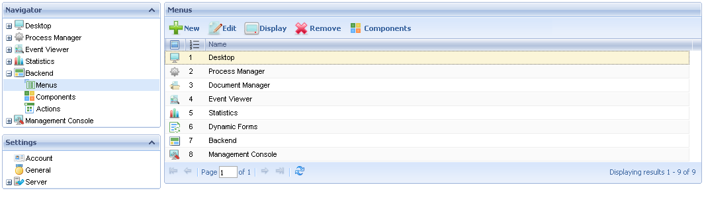
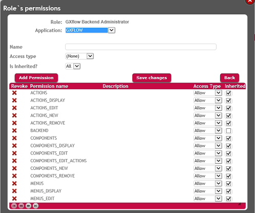

The Backend consists of a group of applications whose purpose is to allow the user to create new Menus, Components and Actions in the GXflow Client General Structure, as well as, making changes to the default ones.
By default only users with the GXflow Backend Administrator and GXflow Administrator roles will have access to this menu.

The Backend has the following components:
The access level to any Menu can be managed.
When a new item is created the GXflow - Access Level property can be set in order to give access to the: GXflow Administrator, GXflow Manager or to all roles. The access level can be managed for Menus only—for components and actions it is inherited from the menu to which belongs to.
Note that for default menus this is not possible when not using GeneXus Access Manager.
However, when integrated security (GAM) is enabled in a Knowledge Base, it is possible to manage the access level for all Menus, Actions and Components. When using GeneXus Access Manager; users, roles and permissions are managed from GAM Web Backoffice—see article GXflow - GAM Integration for further details.
Therefore, we must use the GAM Web Backoffice in order to manage the access to each Menu, Component and Action.
For Menus, Components and Actions permissions will be created as follows:
| Item |
Permission Syntax |
Description |
Example |
|
Menus
|
{MENU_ID} |
A permission with the ID1 of the menu—in case letters. This permission is created when the menu is added to a component, and manages the access level to that specific menu.
|
For the menu named 'Desktop'—ID = DESKTOP— the following permission will be created:
DESKTOP
|
| Components |
{COMPONENT_ID} |
A permission with the ID1 of the component—in case letters. This permission is created when the component is added to a component, and manages the access level to that specific component. |
For the component named 'Inbox'—ID = INBOX— the following permission will be created:
INBOX
|
| Actions |
{COMPONENT_ID}_{ACTION_ID} |
A permission with the ID1 of the component followed by an underscore and the name of the action—in case letters. This permission is created when the action is added to a component and manages the access level to an action belonging to a specific component. |
For the action named 'Send'—ID = COMPLETE— of the Inbox component, the following permission will be created:
INBOX_COMPLETE
|
Note1: the ID is used to create the permission and not the Name.
The following image shows some of the permissions asociated to the role GXflow Backend Administrator:

For an overview of the GXflow Standard client please refer to the following section: GXflow Client General Structure.
|